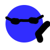
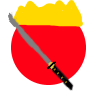
Press these tabs for information on the game
Welcome to the game! You can play in different modes, first you will need to click "Start Game", select the mode, and now you can play. (tutorial highly recommended)
As of now there are 8 main modes: 5 Wave, Normal Mode, Hard Mode, Endless, Story, Sandbox, the tutorial, and the advanced tutorial. Note: after completing any wave modes, you will need to press quit game from esc or pause menu in order to play again.
Use the WASD keys to move the ball.
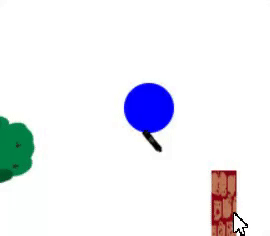
Press 'F' to shoot a yellow ball from the center of the player ball.
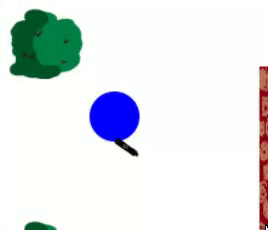
Press 'G' to melee attack.
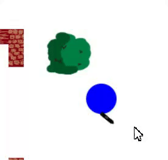
Hold 'T' and press '1', '2', '3', '4', '5' to use abilities.
Note: Build and Demolish are only available to the Engineer class.
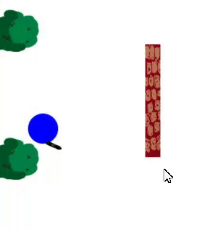
Hold 'Shift' to sprint.
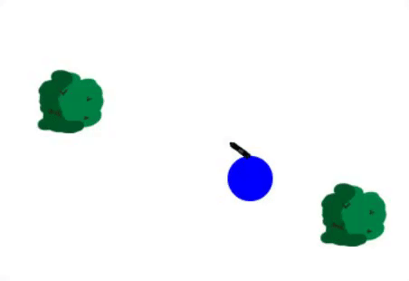
Press 'Ctrl' to dash.
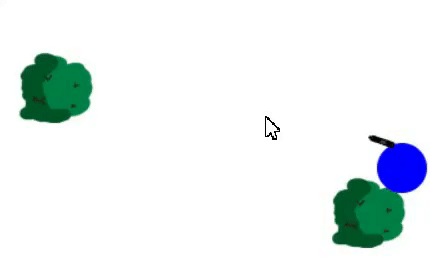
Press 'E' to interact with objects.
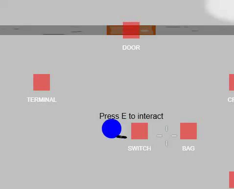
Use the "Menu" button to open the menu and control the ball.
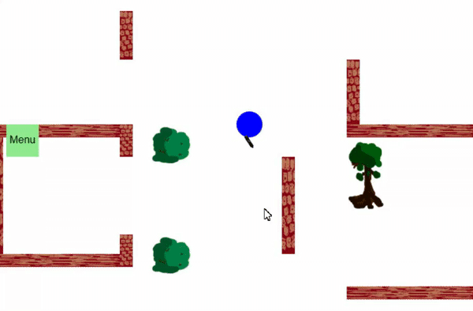
There will be a shop where you can buy new weapons and items. Some items are free while some cost money, which you can obtain these by getting $10 from 1 enemy
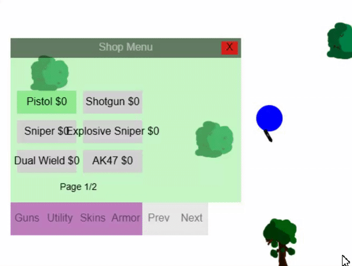
The "frames" will be draggable through holding the topbar and dragging it around.
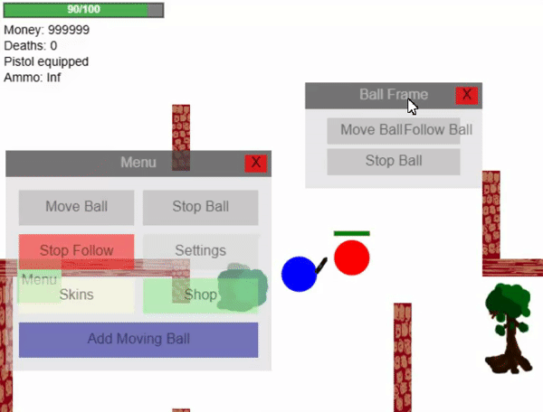
In settings, you can toggle dark mode for the background, as well as walls that bullets can interact with, and you can toggle sound or adjust the volume. There are manual save/load/and clear buttons that can store data.
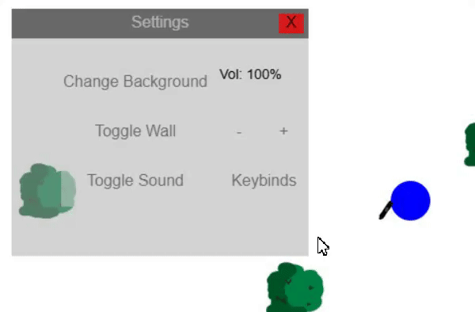
You could also rebind the keys in the keybinds menu. You can get here by clicking the "Keybinds" button in the settings menu.
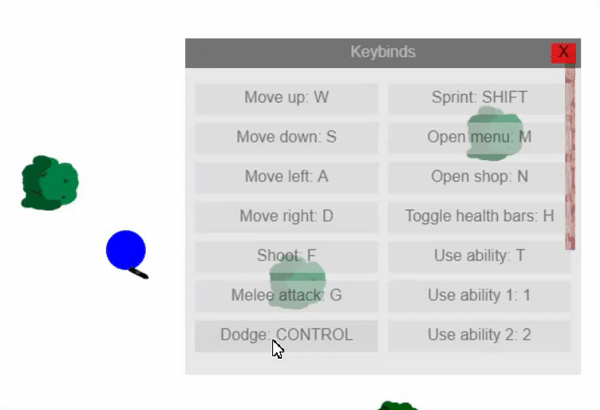
You can view achievements on the Mode Select screen
More notes: beware that there will be ALOT of ui clutter if you do not exit certain frames.
Press 'M' to open the menu and 'N' to open the shop.
Press 'H' to toggle enemy health bars.
Press 'Esc' or 'P' to pause the game or resume.
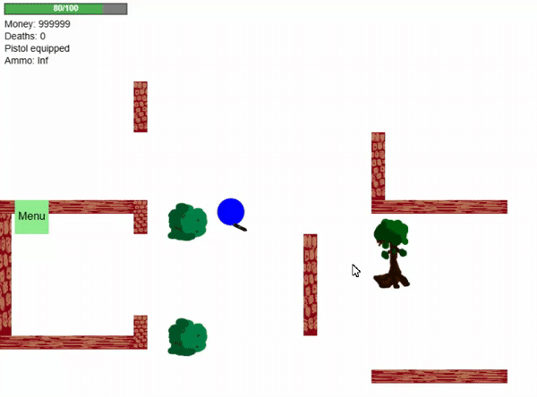
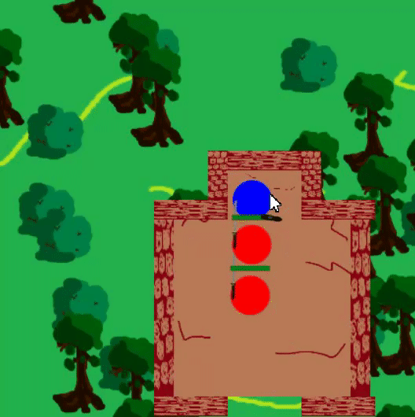
I will be working on this game through multiple weeks probably, so this wont be a full game yet. (As of week 3, there is now a story mode)
For debugging or testing purposes, you can use toggling walls in the settings menu if you ever encounter issues with being stuck.
Note: some features may be hidden, due to it not being fully implemented/ready for use.
There are 4 classes in the game which can be selected during mode select screen
| Class | Weapon | Description |
|---|---|---|
| Default | Pistol | Standard class with balanced stats. |
| Scout | Dual Wield | Faster movement speed, but lower health. |
| Heavy | Shotgun | Slower movement speed, but higher health and damage. |
| Engineer | Pistol | Can build and demolish walls, but has lower health. |
| Medic | Pistol | Passive healing ability. |
| Sniper | Sniper | Long range, high damage. |
The Engineer class can build walls to block enemies and demolish them when needed.
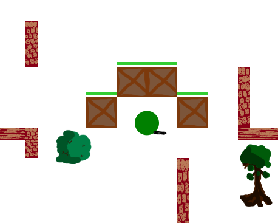
The Medic class has a passive healing ability that slowly regenerates health over time.
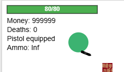
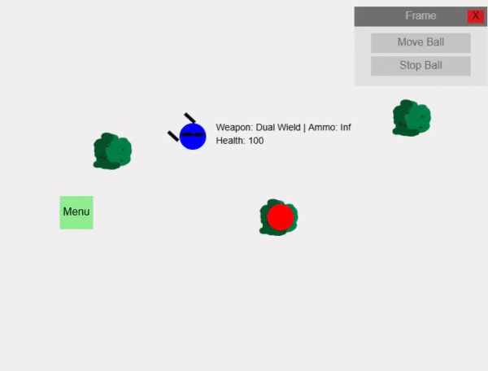
Weapons: Pistol, Shotgun, Sniper, Dual Wield, Explosive Sniper, AK47, Katana, Nodachi, Dragon Slayer, Minigun, Flamethrower, Grenade Launcher, Stun Gun
Items: Heal, Rock, Speed Boost, Mine, Refill Ammo, Ammo Pack
Armor: Leather Armor, Iron Armor, Gold Armor, Cool Armor
Accessories: Crown, Glasses, Monocle, Top hat, Shield (visual only)
Made by jimuv
My GitHub